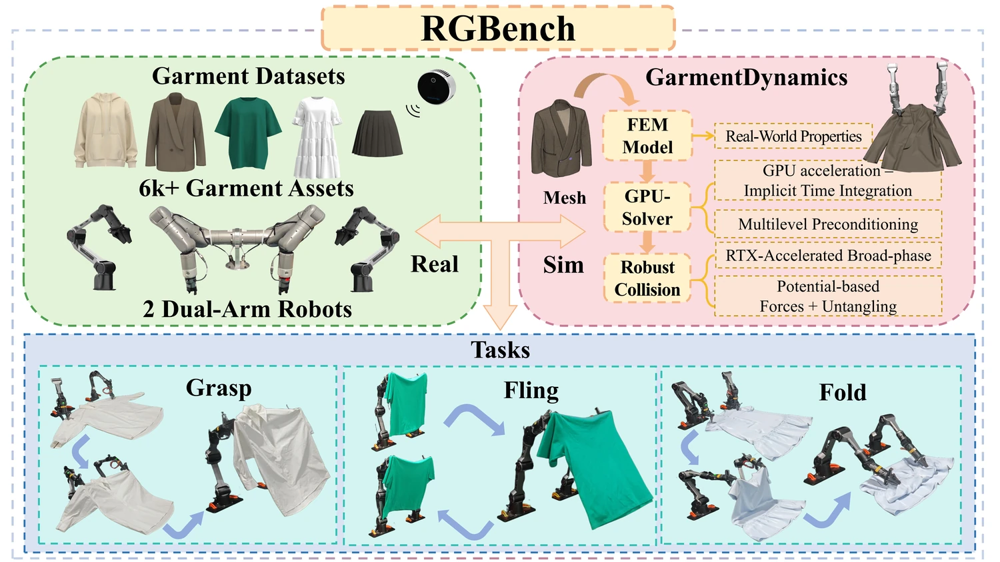
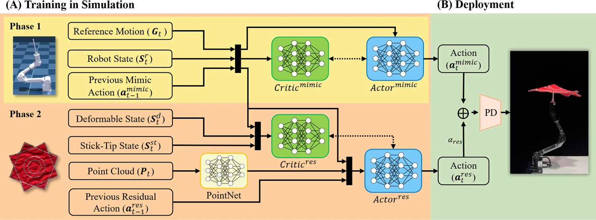
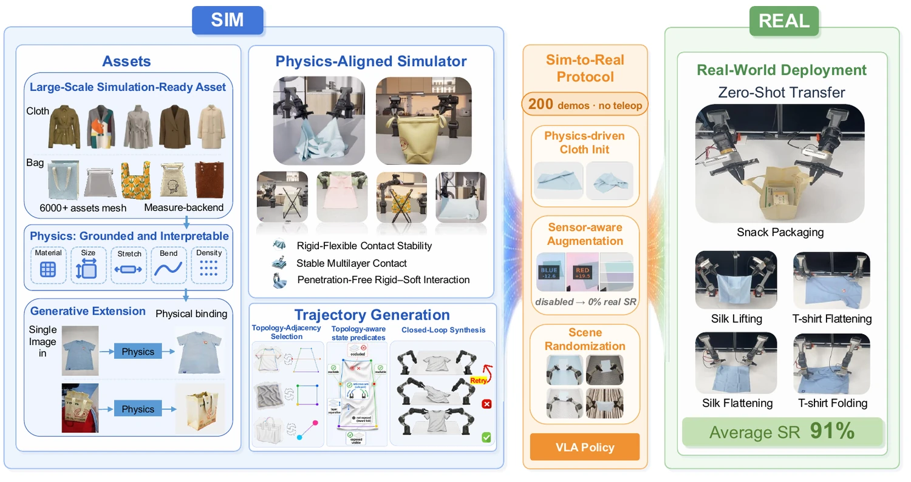
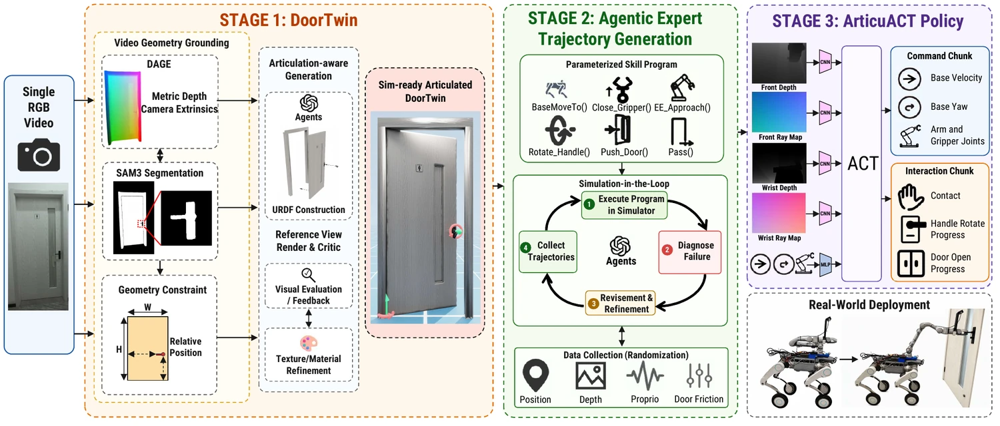
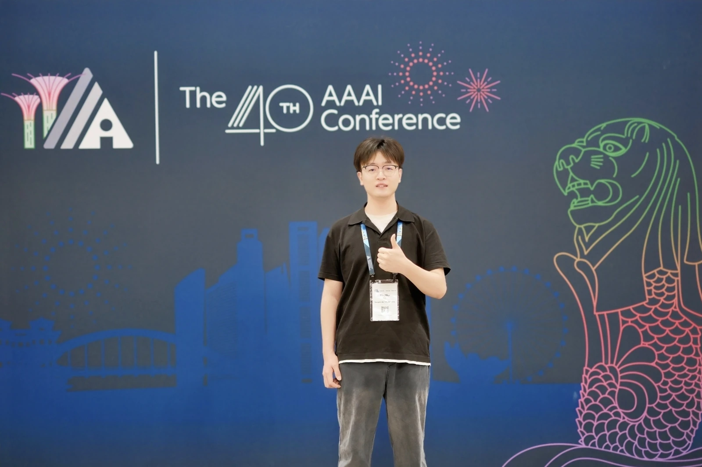
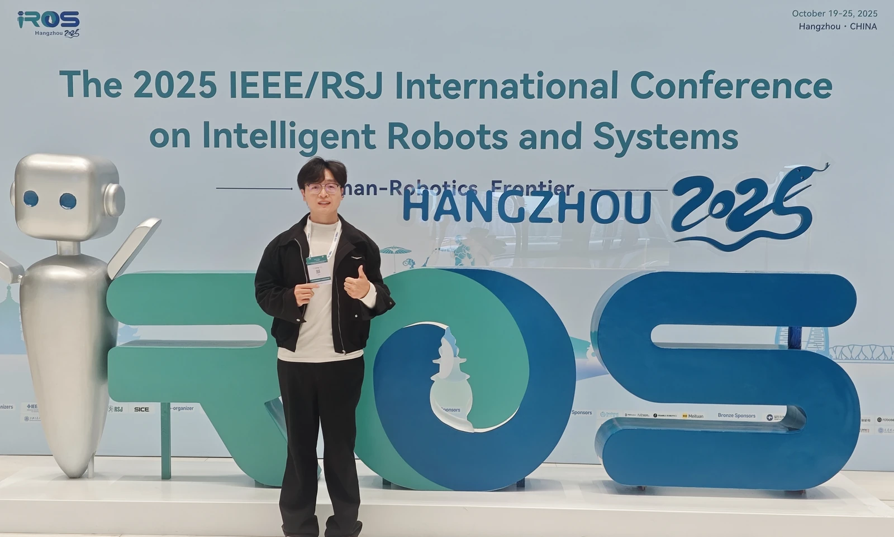
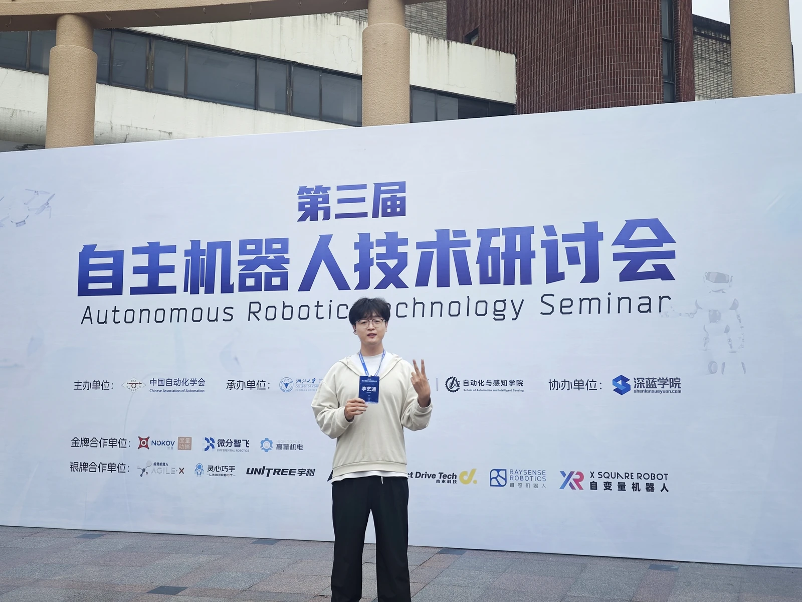

2025 — Present
EDUCATION
Shanghai Jiao Tong University
Master’s in Electronic Information · Global Institute of Future Technology
Research: embodied intelligence, robot manipulation, and sim-to-real transfer.
A researcher in embodied intelligence
Master’s student · Shanghai Jiao Tong University
Global Institute of Future Technology
I study how robots learn, interact, and act in the physical world. My research spans embodied intelligence, robot manipulation, and simulation-to-real transfer.
Embodied intelligence / Robot learning
I explore embodied intelligence at the intersection of robot learning, interaction, and the physical world.
As a master’s student at SJTU, I work on robot manipulation and sim-to-real transfer. I am interested in how robots acquire useful skills in simulation, adapt to uncertainty, and translate those skills into reliable real-world behavior.
A path shaped by learning, research, and hands-on work.
Education
Master’s in Electronic Information · Global Institute of Future Technology
Research: embodied intelligence, robot manipulation, and sim-to-real transfer.
Bachelor’s in Automation · School of Automation Engineering
Admitted to SJTU for graduate study through recommendation.
Algorithm Intern · R&D Department
Shanghai Neowa Robotics Technology Co., Ltd.
Robotic Manipulation · Joint Research Project
5 research projects


Residual Policy Learning from Motion Imitation for Continuous Highly Dynamic Cloth Manipulation
Continuous dynamic manipulation through motion imitation and residual learning.


* Equal contribution. Preprints are listed separately from published work.
Manipulation, navigation, and transfer: three ways to explore the connection between intelligence and action. Drag to change your perspective.
Drag to orbit · An illustrative research sketch
Conversations, new perspectives, and moments along the way.

Presenting RGBench, sharing questions and perspectives.

Meeting the robotics community.

The 3rd Autonomous Robot Technology Symposium.